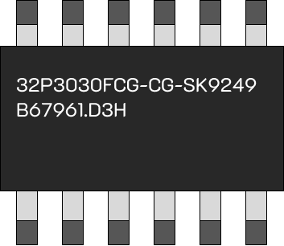
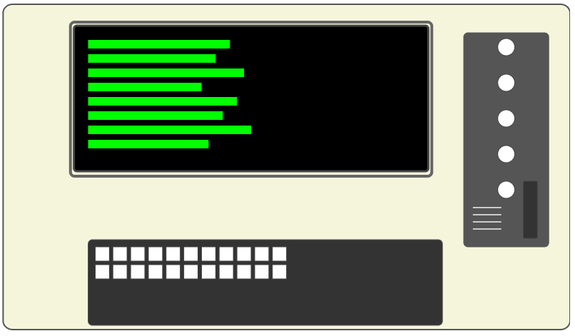
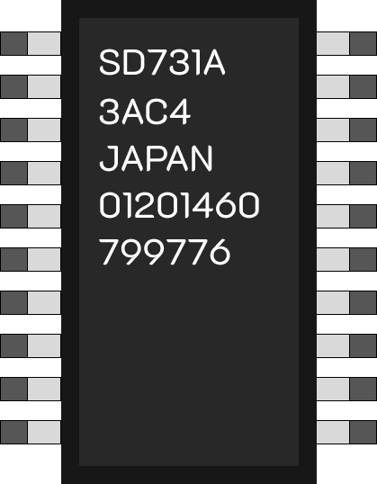

Інтегральна мікросхема
Мікросхеми стали основою нового покоління ЕОМ. Вони значно підвищили швидкодію та зменшили габарити пристроїв. Інтеграція елементів стала важливим кроком у розвитку комп’ютерної техніки.
ЕОМ третього покоління
Використання мікросхем кардинально змінило архітектуру комп’ютерів. Це дозволило створювати більш потужні та компактні машини. Технологія інтеграції відкрила нові можливості для обчислень.
Інтегральна мікросхема
Великі інтеграційні схеми відкрили шлях до створення потужних обчислювальних систем. Це стало важливим етапом еволюції комп’ютерів. Мікросхеми стали основою сучасних технологій.